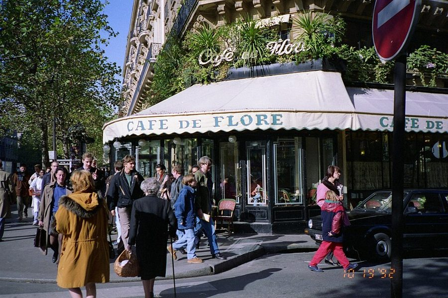
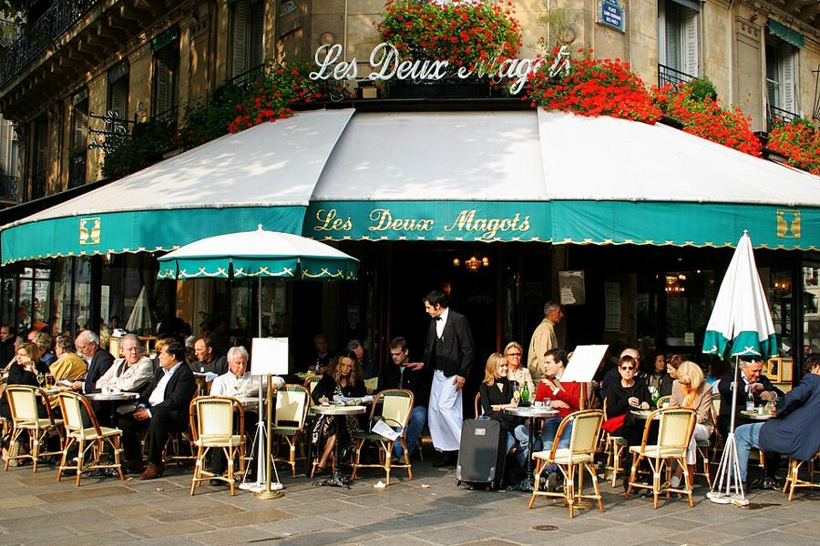
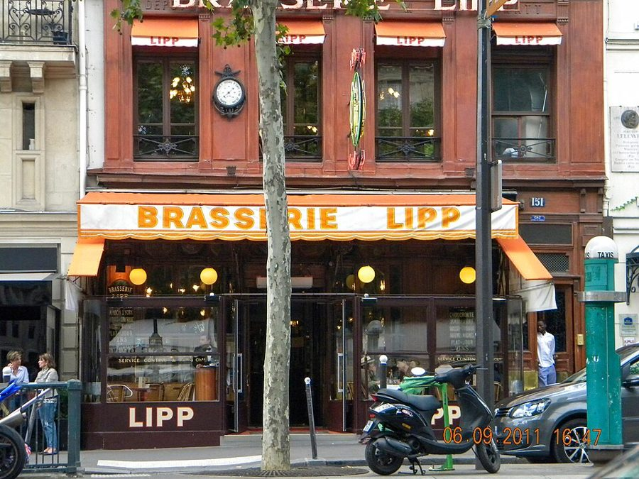
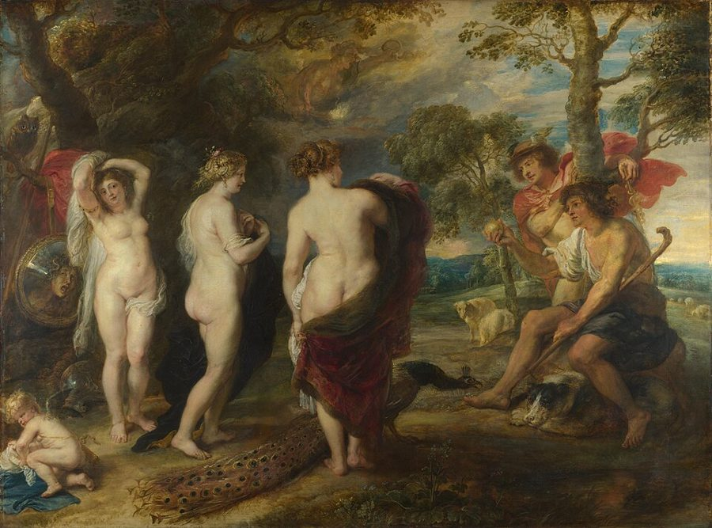

这一篇在做什么
1996 年 10 月的一个星期六，作者约朋友 Nicole Wisniak 在花神咖啡馆（Café de Flore）吃午饭，楼上楼下都没有空位。隔一条小街就是双叟咖啡馆（Les Deux Magots），她却说不出为什么，就是不能进去。作者由此追问：同一个广场上的两家老店，为什么一家至今最时髦，一家早被时髦的人抛弃？作者读了史料，又去问了三个人。读的时候抓两条线：§2 开头拿修烘干机开玩笑提出的「三步解释」，和三个人的答案怎样一一对上它。

花神咖啡馆，1992 年 10 月，比这一篇早四年。白底绿字的遮阳篷，§2 里作者特意提到。Osbornb，CC BY 2.0，维基共享资源 读之前：这篇的来历
这一篇写在 1996 年秋：文中说 Olivier Todd 的加缪传是「今年」巴黎的大书之一，Enthoven 的文集是「这一季」最讨喜的，两本都是 1996 年出的；作者举例说的那位前国防部长，多半指那年秋天的一条新闻（见「背景」）。它刊在 1996 年 12 月 2 日那期《纽约客》上，在书里排第 7 篇，属于第二部分「远方的错误」。前一篇「寒意」写一个格外冷的冬天里巴黎的种种低落，后一篇是第二本圣诞日记。一家人到巴黎已经一年，作者有了一群媒体、出版圈的朋友，这一篇的材料大半来自他们的饭桌和电话。口气比前几篇轻：这回追问的是一个看上去毫无分量的问题。
两家几乎一样老、一样有名的咖啡馆，为什么一家时髦、一家不时髦？这种事到底有没有解释？
读的时候带着这几个问题。不用先找答案，读完回来对照「检查一下理解」。
Nicole 为什么不进双叟？她自己说得出理由吗？作者拿什么来比这种情形？§1
修烘干机那一段看上去是闲笔。它和后面三位朋友的说法是什么关系？§2
三种解释里，作者自己更信哪一种？还是哪一种都没认？§2
这一篇的路线
这一篇的骨架在 §2 第一段：作者拿修烘干机开玩笑，说巴黎人解释任何事都分三步，又拿法国大革命的史家演示了一遍。之后的篇幅，就是把「两家咖啡馆」这一行按同样的三步填满。中间有一大段绕路：两家店的来历、1940 年代的掌故、花神楼上的座位、满屋的口头禅。读译本时容易以为主线断了，其实是在等第一位朋友开口。三位朋友依次出场，正好对上三步，第一步和第三步作者自己点破了。开头的「三体问题」也在第一位朋友那里回来了。
§1 星期六：双叟进不去
① 浪漫的个人
② 意识形态的必然
③ 解释本是徒劳
修烘干机
只有一个师傅会修
店里的规定
烘干机都这样
法国大革命
伏尔泰一手造成
阶级之争
处处是恐怖统治
绕路：店史 · 1940 年代 · 楼上的座位 · 口头禅
两家咖啡馆
Boubal 与 Cazes
Maurras 与左右派
索绪尔与帕里斯
老朋友，在花神楼上
Enthoven，电话里
阴郁的朋友
收尾：C’est normal
本站示意图。前两行是 §2 开头作者给的模板和例子，第三行是全篇真正要填的那一行，三位朋友按箭头的顺序出场。 作者落在哪： 作者没有替哪一种解释拍板。三步按预告依次到场，作者自己的判断只有两句：巴黎的历史不压人，像侍者擦完桌子问你还要什么；两家店由第一次德国入侵塑形，又被第二次扭了形。最后一句话交给那位阴郁的朋友：时髦注定要二选一，选的人叫帕里斯，C’est normal，和修烘干机的店员说的一样。
分节地图
原书这一篇只有一处分隔，分成两节，第二节占了全篇的八成。每一节的粗体是读译本时认得出的场面；下面的斜体是英文这一节开头的几个词，打开电子书搜它就能跳到那里。读完一节打个勾。
花神满座，Nicole 不肯进双叟约 500 词 I have been brooding a lot … 提出问题，立下「三体问题」的比方。留意 Nicole 说不出理由。 修烘干机，花神楼上，三位朋友三种说法约 2100 词 In Paris explanations come in a … 先给三步解释的模板，再绕一段店史，最后三位朋友依次作答。
背景：作者默认你知道的事
按在书里出现的顺序排，标题前是节号。
§1 圣日耳曼德佩的三角：花神、双叟、力普三家店都在巴黎左岸第六区的圣日耳曼大道（boulevard Saint-Germain）边上。花神在大道和圣伯努瓦街（rue Saint-Benoît）的转角；双叟在小街另一边，面朝圣日耳曼德佩教堂前的小广场；力普啤酒馆（Brasserie Lipp）在大道对面，以阿尔萨斯的酸菜配香肠出名。二战后这一带是存在主义和爵士乐的地盘，「圣日耳曼德佩」成了左岸文人生活的代名词。第 1 篇里作者也半开玩笑地提过力普：当年戴高乐机场外的高速路牌上，连力普订位要等多久都会报出来。
圣伯努瓦街
花神 Flore
双叟 Deux Magots
广场
教堂
圣日耳曼德佩
圣日耳曼大道
力普 Lipp
示意，不按比例
本站示意图。虚线三角就是 §2 里说的「两家咖啡馆加力普」，1880 年力普开张后这个格局才齐。 
双叟咖啡馆的露天座，2006 年。绿篷金字，和花神的白篷绿字正好相反（§2）。Roboppy at English Wikipedia，公有领域，维基共享资源
Nicole Wisniak 法国杂志 Égoïste 的主编。书里给她列了一串头衔（编辑、出版人、广告经理、美术指导），意思是这份杂志几乎由她一人包办。§1 就是她说不出为什么不能进双叟。
§1 Malinowski 的禁忌和凡尔赛的「这个国度」Bronisław Malinowski（1884–1942）是波兰出生的英国人类学家，一战期间在新几内亚以东的特罗布里恩群岛（Trobriand Islands）前后住了约两年，是「参与观察」这种田野方法的开创者之一。作者拿部落里说不出来由、却人人遵守的禁忌，比 Nicole 进不了双叟。同一段的 ce pays-ci（这个国度）据书里说，是凡尔赛宫廷的人对宫廷本身的叫法，作者借来说巴黎的时髦小圈子：一座自成一国的小岛。
Malinowski（中间穿白衣者）和特罗布里恩群岛的岛民，1917–1918 年间。和这一篇的关系只在 §1 那个比方上。拍摄者未署名（可能是当地的珍珠商 Billy Hancock），公有领域，维基共享资源
§2 BHV、Sears 和法国大革命的史家BHV 是巴黎市政厅对面的老百货公司（Bazar de l’Hôtel de Ville），卖五金家电，也管送货和上门修理。Sears, Roebuck 是美国的老牌邮购兼百货公司，美国读者一看就懂：同样是卖家电、修家电的大店。作者说 BHV 是「奇怪的」巴黎版 Sears，奇怪在修起东西来是另一套逻辑。接着拿大革命的史家打比方是玩笑：马克思主义史家把大革命解释成资产阶级和贵族的阶级之争；福柯（Michel Foucault）研究监狱和规训，作者把福柯的立场夸张成「西方文化处处都是恐怖统治」，不能当成福柯的原话。
§2 两家店的来历：书里的说法和常见的说法书里说，双叟原是同名的丝绸内衣铺，1860 年代被河对岸的大百货公司挤垮，改成卖酒的咖啡馆，店名留了下来；花神 1870 年开张，因门外一尊花神像得名；1880 年，逃离德占阿尔萨斯的 Léonard Lipp 在对面开了啤酒馆。常见资料有两处对不上：双叟自己的说法是，这家铺子 1812 年开在附近的布西街，1873 年才搬到现址，1880 年代中期改成咖啡馆；花神开张的年份，多数资料说是 1880 年代。magot 指东方式的矮胖人偶。
双叟店里柱子上的两尊「magot」，2007 年。书里说没人知道它们是什么时候装上去的。User:Donar Reiskoffer，CC BY-SA 4.0，维基共享资源

力普啤酒馆，圣日耳曼大道 151 号，2011 年。Britchi Mirela，CC BY-SA 3.0，维基共享资源 §2 1940 年代：Sartre、Beauvoir 和那个「哲学侍者」占领期间和战后，Sartre 和 Beauvoir 在这一带写作、会客，存在主义成了一种时髦，Gréco 在附近的地下酒窖唱歌。书里那个侍者出自 Sartre 1943 年的《存在与虚无》：动作太快、太准、太殷勤，像在扮演「侍者」这个角色，Sartre 用他说明「自欺」（mauvaise foi）。作者在括号里说自己现在还常碰到这样的侍者。另外，常见的说法是，占领期间两人最常待的是花神楼上，那里生着煤炉，暖和。
王尔德 Oscar Wilde 爱尔兰作家，1895 年在英国因同性恋入狱，1897 年出狱后流亡法国，1900 年死在左岸美术街（rue des Beaux-Arts）的一家旅馆。
乔伊斯 James Joyce 爱尔兰作家，1920 到 1940 年住在巴黎，《尤利西斯》1922 年在巴黎出版。§2 说乔伊斯和人喝瑞士白葡萄酒，和海明威则喝干雪利酒，这是海明威自己的讲法。
加缪 Albert Camus 《局外人》《鼠疫》的作者，1957 年获诺贝尔文学奖，1960 年车祸去世。Olivier Todd 的传记《加缪的一生》（Albert Camus, une vie）1996 年由伽利玛出版社出版，作者说这一段的掌故很多是读这本书知道的。
萨特、波伏瓦 Jean-Paul Sartre, Simone de Beauvoir 哲学家、作家，存在主义的代表人物，终身伴侣。Beauvoir 是《第二性》（1949）的作者。
格雷科 Juliette Gréco 歌手（1927–2020），战后圣日耳曼德佩的标志人物。
§2 满屋的口头禅和那位前国防部长作者在花神楼上听到的三个词 perversité、c’est normal、donc，见「词与短语」。作者举的例子「一位前国防部长可能当过东欧集团的特工」，多半指当时的一条新闻：1996 年秋，法国《快报》（L’Express）报道称，1981 到 1985 年任国防部长的 Charles Hernu 曾化名为苏联和东欧的情报机构工作。Hernu 1990 年已去世，无从回应。作者拿这件事说明 c’est normal 的用法：再出格的事，想明白了也「正常」。
§2 Boubal、Cazes 和奥弗涅人书里说 Paul Boubal 1939 到 1983 年经营花神，Roger Cazes 经营的是对面的力普，两人都是奥弗涅（Auvergne）人。巴黎有很多咖啡馆、酒馆是奥弗涅和邻近一带的人开的，他们 19 世纪起进城卖煤卖柴，再开咖啡馆，巴黎人管他们叫 bougnat。力普 1920 年由 Marcelin Cazes 接手，1955 年传给儿子 Roger。所以第一位朋友说的「第三颗行星」是力普，不是双叟。
§2 Maurras 和法兰西行动Charles Maurras（1868–1952），诗人、评论家，法兰西行动（Action française）的头号理论家。这个主张恢复君主制、反犹、反议会共和的运动，1898–1899 年由 Henri Vaugeois 和 Maurice Pujo 发起，早期就在花神楼上聚会；Maurras 随即加入，成了它的灵魂，书里称 Maurras「创始人」是笼统的说法。1931 年 Maurras 出了回忆这段的书《在花神的标志下》，1938 年当选法兰西学院院士，1945 年以通敌罪被判终身监禁。Enthoven 说 Sartre 一代因此避开花神，他开口就说这是自己的「假说」；它和上面占领期间常在花神的说法并不一致。
Charles Maurras，1937 年 Studio Harcourt 拍摄的肖像。Studio Harcourt，公有领域，维基共享资源
Enthoven Jean-Paul Enthoven 评论家，格拉塞（Grasset）出版社的编辑，1996 年出了文集《土星的孩子》（Les Enfants de Saturne）。书里说，巴黎的事没有 Enthoven 解释不了的。第二种解释就是 Enthoven 给的。
§2 索绪尔和帕里斯的裁判Ferdinand de Saussure（1857–1913），瑞士语言学家，现代语言学的奠基人，死后学生据听课笔记整理出《普通语言学教程》（1916）。最后那位朋友借了其中两点：符号和它所指的东西之间的联系是任意的（arbitraire）；一个符号的意义来自它和别的符号的差别。帕里斯的裁判是希腊神话：特洛伊王子帕里斯（Paris）要把金苹果判给三位女神中最美的一位，帕里斯选了阿佛洛狄忒，换来海伦，引出特洛伊战争。王子和巴黎同名，那位朋友拿这个巧合收尾。

鲁本斯《帕里斯的裁判》，约 1632–1635 年。右边拿金苹果的就是帕里斯。Peter Paul Rubens，公有领域，维基共享资源 词与短语
只收中文译文多半传不出原味的地方：熟词生义、反话和挖苦、典故、夹在英文里的法文。读译本读到觉得别扭、不知道作者在说什么时，来这里找那一节的；斜体小字是原句里的几个英文词，在电子书里搜它就能找到原文。
§1 花神满座，Nicole 不肯进双叟
Two-Café Problem
… of as the Two-Café Problem. The form …
「两家咖啡馆问题」
仿「三体问题」（Three-Body Problem）造的词。这里说的是 19 世纪天体力学的老难题：三个天体互相吸引，轨道算不出一般解，不是刘慈欣的小说。作者把时尚当成引力，第一位朋友说出力普时，这个比方又回来了。
make every apple fall upward
… and make every apple fall upward.
让苹果都往天上掉
接着引力的比方玩牛顿和苹果的典故：在巴黎，时尚的力量大到能把万有引力倒过来。
ingenuous
… I feel even more ingenuous and American …
天真、土气
不是 ingenious（聪明）。和 American 并列，意思是在这位极讲究的巴黎女人面前，作者觉得自己格外像个没见过世面的美国人。
license plate
… a particularly embarrassing American license plate …
车牌
美国各州的车牌上印着州的口号，如宾州的「拱心石之州」、明尼苏达的「万湖之州」。作者说自己像背后挂着这么一块牌子，一看就是外地来的土包子。
that kind of Saturday
… an empty table—that kind of Saturday—so we …
就是那种星期六
插在破折号里的半句话，省掉了「天气好、人人都出门、到处满座的那种」。字面很平，要靠语境补出来。
epigrammatic summary
… at a loss for the usual epigrammatic summary …
一句精辟的断语
usual 是关键：Nicole 平时对什么事都能一句话概括得又准又俏皮，这回居然说不出来。作者在用她的哑口无言说明这个禁忌有多深。
taboo
A taboo as real as any that Malinowski …
禁忌
人类学的本义：说不出道理、却人人遵守、犯了会出事的规矩。拿特罗布里恩群岛的部落比巴黎的时髦圈，是作者的大词小用（见「背景」）。
an observed curiosity
… (or as an observed curiosity) on the …
被人打量的稀罕物
前面是 a curious observer（好奇的旁观者），括号里把两个词颠倒：在时髦圈边上，作者既在看别人，也是被别人当新鲜玩意儿看的那个美国人。自嘲。
belonging to the world
… themselves as belonging to the world, …
属于上流社交圈
the world 在这里不是「世界」，是法文 le monde 的意思：社交界、时髦圈。紧接着的 ce pays-ci 是同一个意思的另一种说法。
ce pays-ci
… to ce pays-ci—this country here, as …
（法文）这个国度
pays 是「国家、地方」，作者译作 this country here。书里说这是凡尔赛宫廷的人对宫廷本身的叫法：好像宫廷是一个单独的国家。作者借来说巴黎的时髦圈，带点调侃。
§2 修烘干机，花神楼上，三位朋友三种说法
the strange Sears, Roebuck of Paris
… BHV—the strange Sears, Roebuck of Paris—to come …
巴黎那家古怪的「Sears 百货」
拿美国读者熟悉的店来比 BHV（见「背景」）。strange 是重点：东西差不多，办事的逻辑完全不同，下面三步解释就是例子。
C’est normal
… says, sighing. “C’est normal.” And what …
（法文）这很正常 / 本来就这样
作者在第 13 段专门解释：它大致相当于英文的 No problem，但重点不在克服了什么困难，而在回到熟悉、安稳的状态，事情看着出格，想明白了就不稀奇。全篇用了三次：修烘干机的店员、花神里的谈话、最后一位朋友的收尾。
a reign of terror
… seen properly, is a reign of terror …
恐怖统治
大写的 Reign of Terror 专指 1793–1794 年雅各宾派的恐怖时期。作者拿它挖苦福柯：在福柯眼里整个西方文化都是恐怖统治，那大革命也就没什么好解释的。这是作者的漫画化，不是福柯的原话。
corner tables
… that all the tables are corner tables.
角落的好位子
饭馆里靠角落的桌子背靠墙、看得见全场，是熟客和名人的位子。方桌让每张桌子都像角落位，意思是人人都觉得自己坐在好位子上。
moleskin
… red leather—what the French call moleskin—and the …
（座椅的）人造革
英文 moleskin 本指一种厚棉布，法文 moleskine 却指涂层的仿皮布料，咖啡馆的长条软座常用。作者先说「红皮」，再补一句法国人管它叫 moleskin，其实它不是真皮。
got timeless
… they got timeless right after the horror …
变成「永恒」
timeless 是「不受时间影响的」，got 却说它是某一天才「变成」的。作者在笑巴黎那些看似亘古不变的东西，很多其实是 1870 年普法战争之后才有的。
café liquoriste
… the space to a café liquoriste, which …
（法文）卖酒的咖啡馆
liquoriste 是卖烈酒、利口酒的商人。双叟最早是以卖酒为主，后来才开始卖咖啡。
magot
… a big picture of three magots that …
（法文）东方式的矮胖人偶
法文里指中国、日本风格的瓷或木雕人偶，样子滑稽。书里说店里的两尊是「中国官员」。
brasserie
… opened a brasserie across the street, …
（法文）啤酒馆式饭馆
本义是啤酒厂，后来指供应啤酒和简单热菜、营业时间长的大饭馆，多带阿尔萨斯风味。力普就是一家。
because Hemingway wasn’t everybody
… because Hemingway wasn’t everybody. (That’s how …
因为海明威不是随便什么人
前面说乔伊斯和「所有人」喝白葡萄酒，只和海明威喝雪利酒。括号里补一句「反正海明威是这么讲的」：作者在轻轻挖苦海明威讲故事时给自己留的那个特殊位置。
unmanning
… ought to be unmanning or even just embarrassing.
让人发怵、手足无措
unman 是让人丧失勇气，不是字面的「去男性化」。坐在王尔德、乔伊斯坐过的地方，照理会被历史压得喘不过气。
commonplace civilization
… efficiency of French commonplace civilization, of which …
日常生活的文明
commonplace 不是「平庸」，是「日常的」。第 1 篇里作者说巴黎是有史以来最美的日常文明：咖啡馆、啤酒馆、公园。这里说咖啡馆是它的最高体现。
wiping the table off
History keeps wiping the table off and …
把桌子擦干净
把「历史」写成一个侍者：擦掉上一桌留下的痕迹，有点不耐烦地问你现在要点什么。所以巴黎的过去不压人。见「值得停下来的句子」。
résistants
… the group of résistants came into being …
（法文）抵抗者
二战德国占领期间参加抵抗运动的人。作者用法文写，指的是 Sartre、Beauvoir、Camus 这一群人。
philosophical garçon
… his famous philosophical garçon, of whom …
（Sartre 的）哲学侍者
garçon 是法文的「侍者」。指 Sartre《存在与虚无》里那个过分殷勤的侍者（见「背景」）。作者紧接着引了 Sartre 的原话，又在括号里说自己现在还常碰到这样的侍者。
the law of Inverse Natural Appeal
… following the law of Inverse Natural Appeal.
「自然吸引力反比定律」
作者自造的「定律」，模仿物理定律的口吻：一个座位越是自然地讨人喜欢，越不入流。露台最舒服，所以禁坐；楼上最难看，所以最时髦。
off limits
… perfect day), is off limits; the inner …
（对讲究的人来说）坐不得
原指禁止入内的区域。露台没人拦着，是时髦的人自己不坐。括号里那句「天气越好越不能坐」是同一个规律。
the most OK place
… by far the most OK place to …
最「对」的位子
OK 不是「还行」，是圈内人认可的、坐了不丢人的。用一个极口语的词说上流社会的讲究，本身就带着调侃。
Howard Johnson’s
… the cocktail lounge of a Howard Johnson’s …
（美国的）公路连锁餐厅
Howard Johnson’s 是美国 1950–1970 年代遍布公路边的连锁餐厅兼汽车旅馆，橙色屋顶，土气实惠。说巴黎最时髦的楼上像它的酒吧间，是故意往低里比。
murmur of certainties
… with its lovely murmur of certainties and …
轻声细语的斩钉截铁
murmur 是低声，certainties 是确定无疑的结论。满屋子都在轻声地下定论。lovely 是真喜欢，也带一点笑。
Perversité
… resonated all around. Perversité, which means …
（法文）乖张、邪气（夸人的话）
字面是「反常、变态」，在时髦圈里却是夸奖：一本书、一道菜、一个政客有点「邪」，说明它有贵族气、不随大流。
donc
… rises the connective donc, which just …
（法文）所以、因此
普通的连接词，可在文人的谈话里一说出来，就像推出了不容置疑的结论。作者把它比成钟声。
as the night the day
… follow as the night the day” and …
如同黑夜跟着白天，必然如此
出自《哈姆雷特》里 Polonius 对儿子的叮嘱：「就像黑夜跟着白天，必然如此」。作者借这句老话夸张 donc 在法国人嘴里的分量。
Gideon’s trumpet
… as conclusive as Gideon’s trumpet.
基甸的号角
《旧约·士师记》：基甸带三百人夜里吹响号角，敌营不战自溃。说一个 donc 像号角一样，一吹就定了胜负。
family feeling
… family feeling in the real sense—of dependence …
一家人的感情
平常说的是亲热，朋友紧接着补一句「真正意义上的」：互相依赖、互相猜疑、互相怨恨。这才是一家人。
the third planet
… the third planet, perturbing the orbits …
第三颗行星
回到开头的「三体问题」：力普就是那第三个天体，扰动了另外两家的轨道。perturb 是天文学的「摄动」。
terroir
… a touch of terroir, the French affection …
（法文）乡土
本是葡萄酒的行话，指一块地的水土气候。这里指两位老板同乡的情分：浪漫个人的解释，外加一点乡土情。
the season’s most winning collection
… the season’s most winning collection of …
这一季最讨人喜欢的文集
winning 在这里是「迷人的、讨喜的」，不是「获奖的」。巧的是，这本书第二年真得了奖（见「后来」）。
by default
… Deux Magots, by default, with the left.
（另一边被占了）自然就归了
不是电脑里的「默认」。花神被右派占了，双叟就自动归了左派，不是左派主动选的。
disgraced and hallowed
… he touched was simultaneously disgraced and hallowed.
既被玷污，又被奉为神圣
Enthoven 的说法：Maurras 碰过的东西，同时变得可耻又神圣。两个意思相反的词并列，是法式警句的路数。
abide with the many
… emptiness rather than abide with the many.
和众人待在一起
abide with 是古雅的「与……同住」，the many 是「大众、芸芸众生」。知识分子宁可去收拾一个空店，也不和游客挤在一起。用词很庄重，说的是挑咖啡馆。
sacralized
… was sacralized by Sartre, desacralized by …
被神圣化
英文里少见，对应法文常用的 sacraliser，带着法国知识分子的腔调。Enthoven 预备好一句警句才说出口：Sartre 封圣，游客去圣，历史腾空。
the first German invasion
… shape by the first German invasion and …
第一次德国入侵
作者前一句自己点明了：1870 年和 1940 年。第一次让广场和三家店成形，第二次把它们扭了形。这是全篇少数几句作者自己的判断。
a lesser, more despairing café
… a lesser, more despairing café—neither fashionable …
一家更寒酸、更「绝望」的咖啡馆
咖啡馆本身不会绝望，是作者把那位阴郁朋友的气质移到店上。既不时髦也不过时，只是个说话的地方，正好配「解释本是徒劳」的那一步。
Saussurean
… is a simple, Saussurean one.
索绪尔式的
拿人名造形容词。作者紧接着替读者解释了索绪尔是谁（见「背景」）。simple 是朋友的原话，听着有点好笑：搬出现代语言学的奠基人，还说是「简单的」解释。
necessarily arbitrary
… possibly arbitrary. It’s necessarily arbitrary. …
必然是任意的
arbitrary 在语言学里是「任意的」（索绪尔说符号和意义之间没有天然联系），不是「专断、蛮横」。「必然」和「任意」放在一起像悖论：没有理由，但一定会有一边被选中。
the great choice among the beauties
… the great choice among the beauties: …
在美人中间做的那次大选择
指帕里斯的裁判（见「背景」）。三位女神都美，却非选一个不可。下一句问选的人叫什么，答案是 Paris：王子和这座城同名，全篇在这个双关上收住。
后来
这一篇写在 1996 年秋。下面接着讲书里的一件事后来怎样。写了核对日期，这类内容过一两年就会变。
Enthoven 的文集和力普的文学奖
力普的老板 Marcelin Cazes 1935 年设了一个文学奖 Prix Cazes，每年在店里颁发，当初规定只颁给还没得过别的文学奖的作者。1997 年，这个奖颁给了 Enthoven 的《土星的孩子》，就是作者在这一篇里说的「这一季最讨喜的文集」。给作者讲咖啡馆掌故的人，第二年领了那颗「第三颗行星」的奖。Roger Cazes 1987 年去世后，力普先由家人经营，后来归餐饮集团 Groupe Bertrand（接手的年份，各家说法有 1990 年和 2002 年两种），至今仍在营业。核对于 2026-10。依据：法文维基百科 Brasserie Lipp、Groupe Bertrand 与 Jean-Paul Enthoven 条目，《费加罗杂志》2010-01-23 的力普店史。
值得停下来的句子
In Paris explanations come in a predictable sequence, no matter what is being explained.— §2，第一段开头。本站译：在巴黎，无论解释什么，解释总按一个可以预料的顺序出场。
这是全篇的提纲，读的时候容易当成随口一句玩笑滑过去。predictable 是关键：作者先把规律说死，再让三位朋友不知不觉地一一应验，读者读到最后会发现自己被领着走了一圈。no matter what 也有分量：从烘干机到大革命到咖啡馆，大小不论。中文译出来，「可以预料」的那点得意劲儿容易变平。
History keeps wiping the table off and asking you, a little impatiently, what you’ll have now.— §2，讲王尔德、乔伊斯来喝酒的那一段末尾。本站译：历史不停地把桌子擦干净，有点不耐烦地问你：现在要点什么？
主语是「历史」，动作却全是侍者的：擦桌子、催点单。keeps 是一遍又一遍，a little impatiently 是巴黎侍者的招牌态度。what you’ll have now 是点单的套话，也是在说：过去的已经收走了，你要的是现在。中文很难同时保住「历史」这个大词和「侍者」这个小场面之间的落差。
检查一下理解
先在心里答，再点开。答错的那题，回书里把对应那一节再读一遍。
1.（§1）Nicole 为什么不进双叟？作者拿什么来比？ 她说不出理由，只记得大概二十年前还去过，脸上一副为难又无能为力的笑。作者把它比作人类学家 Malinowski 研究过的部落禁忌：没人知道从哪来，却人人遵守。
2.（§2）修烘干机的例子在全篇里起什么作用？ 它给出巴黎人解释事情的三步：先归于某个独一无二的人，再归于意识形态或规定的必然，最后说根本无从解释、本来就这样。后面三位朋友对两家咖啡馆的解释，正好按这个顺序出场。
3.（§2）作者说坐在满是历史的咖啡馆里并不让人发怵，为什么？ 不是因为巴黎人敬重过去，而是因为过去好像不在那里。咖啡馆这种日常文明利落、不讲感情，让人来不及怀旧，像侍者擦干净桌子问你现在要什么。
4.（§2）花神里哪个位子最「对」？「自然吸引力反比定律」说的是什么？ 最对的是楼上，坐的是难看的棕黄色人造革，像美国公路连锁餐厅的酒吧间；最舒服的露台反而坐不得。越是自然讨人喜欢的位子越不入流，这条「定律」是作者编来开玩笑的。
5.（§2）第一位朋友的解释属于三步里的哪一步？「第三颗行星」指什么？ 第一步，浪漫的个人：花神的 Boubal 和力普的 Cazes 是奥弗涅同乡，互相猜疑又互相走动，两家结成「一家人」，双叟的老板太腼腆，被撇在外面。第三颗行星就是力普，它扰动了另外两家的轨道。
6.（§2）Enthoven 的解释为什么算「意识形态」那一步？ 它用左右派来讲：两战之间右翼的 Maurras 以花神为据点，双叟就归了左派；占领时期 Sartre 一代因此避开花神，后来游客挤满双叟，知识分子又回到空着的花神。Enthoven 自己说这是他的「假说」。
7.（§2）最后那位朋友为什么搬出索绪尔和帕里斯？ 索绪尔说符号的意义来自差别，时髦也一样，只有和不时髦的东西对照才存在，所以任意两样东西并排，必然有一样被选中。帕里斯的裁判是「都美、却非选一个不可」的神话，选的人又恰好叫 Paris。最后一句 C’est normal，就是第三步：没什么好解释的。
用一句话说这一篇，写给一个没读过的人。
精彩回顾
读过又忘了，从这里想起来。挑的是这一篇最值得记住的场面和说法，不按原书顺序；每条后面是节号，想细看就回书里那一节。全书各篇的这一节都收在全书回顾 。
一句话： 两家隔一条小街的老咖啡馆，一家时髦一家不时髦；作者问了三个人，三种解释正好按巴黎人解释事情的老三步出场。
修烘干机的三步 烘干机坏了：只有一个师傅会修，师傅找不到；店里规定要等一周；最后店员叹气说烘干机本来就娇气，C’est normal。作者说巴黎人解释任何事都是这三步，大革命也不例外。
§2 楼上那排难看的座位 花神最舒服的露台没人坐，最时髦的是楼上，坐的是棕黄色人造革，像美国公路餐厅的酒吧间。作者为此编了一条「自然吸引力反比定律」。
§2 进不去的双叟 花神满座，Nicole 就是不肯走几步去双叟，平时一句话能概括一切的人，这回说不出为什么。作者把它比作部落禁忌。
§1 第三颗行星 第一位朋友说，关键不在双叟，在对面的力普：两位奥弗涅老板互相猜疑又互相捧场，把花神和力普结成一家，双叟被撇在外面。开头的「三体问题」在这里回来了。
§2 历史擦桌子 王尔德、乔伊斯、海明威都在这里喝过酒，可坐在那里并不觉得被历史压着：历史像巴黎侍者，擦干净桌子，有点不耐烦地问你现在要什么。
§2 选美的人叫帕里斯 最后一位朋友说，任意两样东西放在一起，必有一样时髦，因为欲望总要选。就像神话里三位女神都美，却必须选一个，而选的人名叫 Paris。
§2